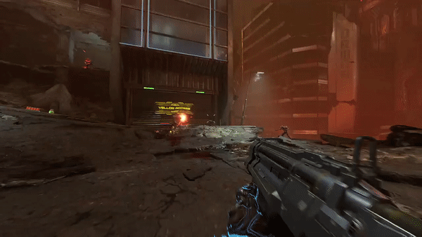
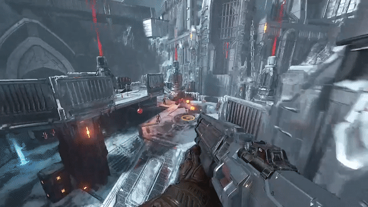

starting weapon as the Doomslayer.
Great medium range weapon with high damage.

Sticky Bombs: turns shells into a sticky grenades
very high damage even on long range
great for taking out weakpoints or killing multiple enemies
Mastery: Five Spot: Launch 5 Sticky Bombs before having to reload the mod.
Full Auto: shotgun now has a rotor which fires shells in a guick period of time
high fire rate grants on of the biggest DPS in-game
Mastery: Salvo Extender: Killing a demon with the full auto mod will drop shell ammo.
Despite a wealth of armament options for the modern combat specialist, this trusty workhouse remains a firm favourite among operatives.
When matched against super-heated plasmoids of gauss driven projectiles, the balistic impact of the combat shotgun holds its own.
The simplicity of the design ensures the weapon is extremely quick and reliable, yet the vast array of ammunition types makes it
versatile and flexible. Colloquially known as the "Crowd Appeaser", a locked and loaded Combat Shotgun will pacify even the most
riotous of assailants.